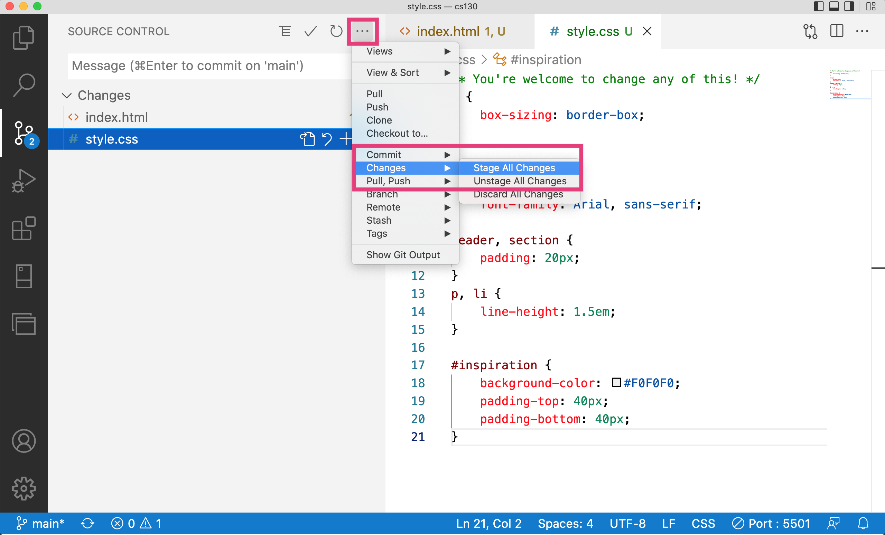
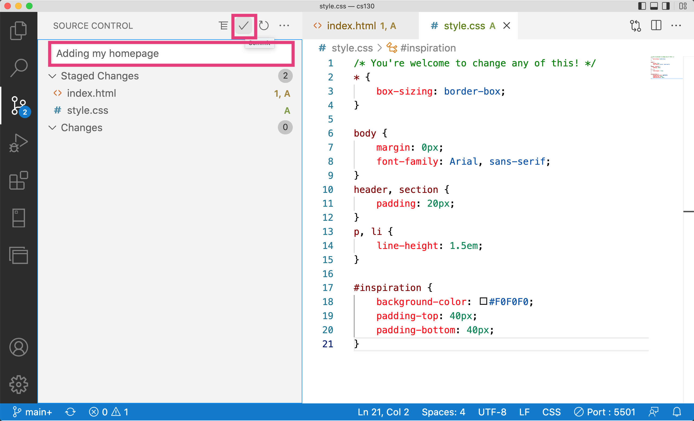
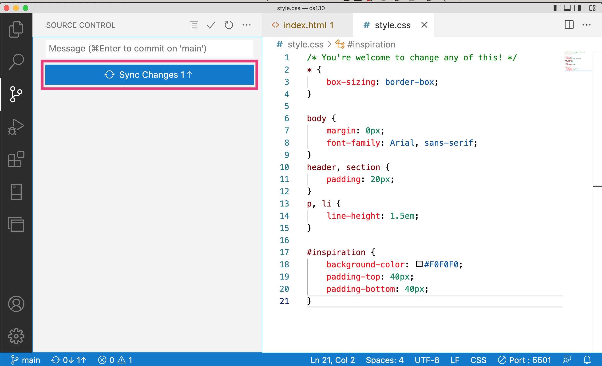

Assignments > Tutorial 3: Create a Homepage
Due on Fri, 01/27 @ 11:59PM. 6 Points.
In this tutorial, you are going to make a homepage to showcase the work you have done in this class. You will create your homepage at the root of your csci185 directory (the folder where you made your git repository). Please complete the following steps:
Step 1: Get Set Up
Create a brand new file called index.html directly inside of your csci185 directory, and paste this (suggested) starter code into the HTML file you just created:
<!-- You're welcome to change any of this! -->
<!DOCTYPE html>
<html lang="en">
<head>
<!-- stylesheets and metadata go here -->
<title>My CSCI 185 Homepage</title>
<link rel="stylesheet" href="styles.css">
</head>
<body>
<!-- HTML content tags go here. Change anything you want! -->
<header>
<h1>My CSCI 185 Homepage</h1>
</header>
<main>
<section id="tutorials">
<h2>Tutorials</h2>
<!--
Links to your tutorial assignments go here.
When you submit a new tutorial, add a link to it
here (if applicable)
-->
</section>
<section id="homework">
<h2>Homework</h2>
<!--
Links to your Homework assignments go here.
When you submit a new HW assignment, add a link to it here (if applicable)
-->
</section>
<section id="inspiration">
<h2>Design Inspiration</h2>
<!--
Links to 5-10 websites that inspire you
-->
</section>
<section id="class-exercises">
<h2>Class Exercises</h2>
<!--
Links to your in-class activities
-->
</section>
</main>
</body>
</html>
Also create a stylesheet called styles.css directly inside of your csci185 directory. Paste the following (suggested) starter code into the stylesheet:
/* You're welcome to change any of this! */
* {
box-sizing: border-box;
}
body {
margin: 0px;
font-family: Arial, sans-serif;
}
p, a, li {
line-height: 1.5em;
font-size: 1.1em;
}
When you’re done, your csci185 directory should look something like this:
csci185
├── homework
│ └── hw02
├── lectures
│ ├── lecture03
│ └── lecture04
├── tutorials
│ └── tutorial02
├── index.html # index.html file you just made
└── styles.css # styles.css you just made
Note that you can have additional files and folders in your repo directory, so long as the ones listed above are in there.
Commit your changes and push to GitHub
Once you’ve set up your two new files, go ahead and commit everything and push your new files to GitHub. This will involve (1) “staging” all of your changes, (2) committing them, and (3) syncing them.
1. Staging

2. Committing

3. Syncing

Step 2: Link to your work
Links to Tutorials
Next, create an unordered list inside of the “tutorials” section of your HTML page. If you don’t know how, consult W3 schools or the course HTML reference. Then, within one of the list item tags (<li></li>) add a hyperlink (<a></a> tag) that links to the index.html file you made in Tutorial 2. You will use a relative path. For instance, mine looks like this:
When you’re done, commit your changes and push to GitHub using the same steps that you used above. Then, wait about a minute and go check out your changes on GitHub pages.
- Each week, when you submit your tutorial, you will link to it from your homepage like we did today.
In-Class Work (Optional)
To get some additional linking practice, please create an unordered list inside of the “class-exercises” section of your HTML page. Within each list item, include a link to each in-class activity we have been doing (including the lecture04 exercises from Monday).
Step 3: Plan your homepage design
Eventually, you’ll want to style your homepage to give it your own unique aesthetic. We’ll start digging into some of the CSS principles needed to effectively style web pages next week. That said, it’s never to early to start thinking about the look-and-feel of your website, and coming up with good ideas often starts by examining websites that inspire you.
To gather inspiration, you are going to go out to the Internet and find 5-10 web pages, images, advertisements, banners, etc. that you think look great! You can look at the Design Resources page to find some inspiring websites, or revisit websites that you already like.
When you have your list of websites, create an unordered list to the “inspiration” section of your homepage (like Sarah’s example). Each list item should contain a link to one of the websites you found.
Checklist
Please make sure that you have completed the following (see the example, except you will add images, etc.):
- Added a link to Tutorial 2
- Added links to your in-class assignments (which should be stored in within the
lecturesfolder) – optional but recommended. - Added your “inspiration” links
- Posted your homepage to GitHub Pages
What to turn in
After completing Tutorial 3, please publish everything to GitHub (stage, commit, and sync). Then, in the Moodle, paste a link to:
- Your GitHub pages homepage (the link that visually displays your homepage)
- Your repository (the link that displays your code)
For example, Sarah would submit:
- GitHub pages homepage: https://vanwars.github.io/csci185-coursework/
- Repository: https://github.com/vanwars/csci185-coursework
If you named your GitHub repository something different, that’s OK!